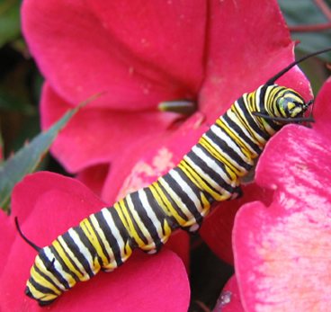
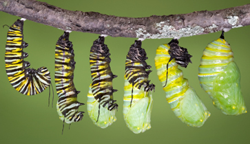
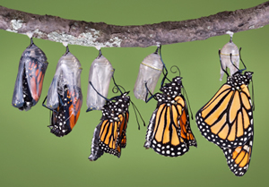

-
Thelife cycle
Let’s explore a butterfly’s life cycle in detail, including all four stages of life. All butterflies have "complete metamorphosis." To grow into an adult they go through 4 stages: egg, larva, pupa and adult. Each stage has a different goal - for instance, caterpillars need to eat a lot, and adults need to reproduce. Depending on the type of butterfly, the life cycle of a butterfly may take anywhere from one month to a whole year.

1
X
The Egg
A butterfly starts life as a very small, round, oval or cylindrical egg. The coolest thing about butterfly eggs, especially monarch butterfly eggs, is that if you look close enough you can actually see the tiny caterpillar growing inside of it. Some butterfly eggs may be round, some oval and some may be ribbed while others may have other features. The egg shape depends on the type of butterfly that laid the egg. Butterfly eggs are usually laid on the leaves of plants, so if you are actively searching for these very tiny eggs, you will have to take some time and examine quite a few leaves in order to find some.
2
XThe Larva
When the egg hatches, the caterpillar will start his work and eat the leaf they were born onto. This is really important because the mother butterfly needs to lay her eggs on the type of leaf the caterpillar will eat – each caterpillar type likes only certain types of leaves. Since they are tiny and can not travel to a new plant, the caterpillar needs to hatch on the kind of leaf it wants to eat. Caterpillars need to eat and eat so they can grow quickly. When a caterpillar is born, they are extremely small. When they start eating, they instantly start growing and expanding. Their exoskeleton (skin) does not stretch or grow, so they grow by “molting” (sheding the outgrown skin) several times while it grows.
3
XThe Pupa
The pupa stage is one of the coolest stages of a butterfly’s life. As soon as a caterpillar is done growing and they have reached their full length/weight, they form themselves into a pupa, also known as a chrysalis. From the outside of the pupa, it looks as if the caterpillar may just be resting, but the inside is where all of the action is. Inside of the pupa, the caterpillar is rapidly changing. Now, as most people know, caterpillars are short, stubby and have no wings at all. Within the chrysalis the old body parts of the caterpillar are undergoing a remarkable transformation, called ‘metamorphosis,’ to become the beautiful parts that make up the butterfly that will emerge. Tissue, limbs and organs of a caterpillar have all been changed by the time the pupa is finished, and is now ready for the final stage of a butterfly’s life cycle.
4
XThe Butterfly
Finally, when the caterpillar has done all of its forming and changing inside the pupa, if you are lucky, you will get to see an adult butterfly emerge. When the butterfly first emerges from the chrysalis, both of the wings are going to be soft and folded against its body. This is because the butterfly had to fit all its new parts inside of the pupa.